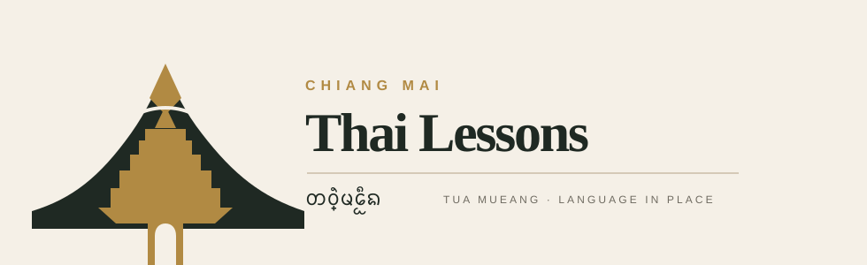
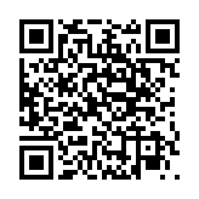

In-person Chiang Mai edition
A practical, printable lesson kit for expats who want to speak Thai in cafes, markets, restaurants, transport, condos, and friendly daily life.
✓ 6 real-life missions
✓ phrase builders + roleplays
✓ QR links to online practice
✓ correction boxes for teacher feedback
✓ 7-day speaking challenge
First onsite lesson: cafe, market, restaurant, or transport.
Next step: send voice notes and book Starter Pack.
Brand promise: one useful Thai sentence you can use today.
Do not study every page at once. Pick the mission the learner needs this week.
Use the base sentence, swap one detail, then say it without looking.
Try the phrase in real life or record a voice note for correction.
| Time | Teacher action | Student output |
|---|---|---|
| 0–5 | Pick the mission and real-life location. | “I need Thai for ____ this week.” |
| 5–15 | Teach polite ending, slow rhythm, and base sentence. | Repeat base phrase 5 times. |
| 15–30 | Build 3 personal variations. | Say personal sentence from memory. |
| 30–45 | Roleplay likely replies and body language. | Answer without freezing. |
| 45–55 | Correct tone, rhythm, vowel length, polite ending. | Record clean voice note. |
| 55–60 | Assign real-world challenge and next booking. | Knows what to use after class. |
Correct rhythm and confidence first. Do not overload beginners with grammar. The product promise is “usable today.”
Romanization is a guide only. Use Thai script + rhythm chunks + human correction for better speaking.
ครับ khrap — commonly used by men.
ค่ะ kha — many statements by women.
คะ kha? — many questions by women.
Request/action + thing/place + detail + polite ending
Example: ขอ + กาแฟเย็น + หวานน้อย + ครับ
| Function | Thai | Roman | Use when... |
|---|---|---|---|
| Hello | สวัสดีครับ / ค่ะ | sà-wàt-dii khrap / kha | Entering a shop, class, or condo office. |
| Thank you | ขอบคุณครับ / ค่ะ | khàawp-khun khrap / kha | Every time someone helps. |
| Excuse me / sorry | ขอโทษครับ / ค่ะ | khǎaw-thôot khrap / kha | Getting attention politely. |
| Please speak slowly | พูดช้าๆ ได้ไหมครับ / คะ | phûut cháa-cháa dâai mái? | When Thai comes back too fast. |
| A little Thai | พูดไทยนิดหน่อย | phûut Thai nít-nòi | Lower pressure and create friendliness. |
Mission 01
Outcome: Order one drink naturally

Base sentence
khǎaw gaa-fae yen wǎan nói khrap / kha
I would like iced coffee, less sweet, please.
| Thai | Roman | Meaning |
|---|---|---|
| ขอกาแฟเย็นครับ / ค่ะ | khǎaw gaa-fae yen khrap / kha | I would like iced coffee. |
| หวานน้อย | wǎan nói | Less sweet. |
| ไม่ใส่น้ำตาล | mâi sài náam-dtaan | No sugar. |
| ใส่น้ำแข็งน้อย | sài náam-khǎeng nói | Less ice. |
Write your personal sentence, then say it without looking.
Use the phrase once at a cafe and notice if the staff repeats your order.
Online practice: https://thailessonschiangmai.com/missions/order-coffee
Mission 02
Outcome: Ask a price and buy one item
Base sentence
raa-khaa thâo-rài khrap / kha?
What is the price?
| Thai | Roman | Meaning |
|---|---|---|
| อันนี้เท่าไหร่ครับ / คะ | an-níi thâo-rài khrap / kha? | How much is this? |
| เอาหนึ่งกิโลครับ / ค่ะ | ao nèung gii-loh khrap / kha | I will take one kilo. |
| แพงไปนิดนึง | phaeng bpai nít-neung | A little expensive. |
| ไม่เอา ขอบคุณครับ / ค่ะ | mâi ao, khàawp-khun khrap / kha | No thank you. |
Write your personal sentence, then say it without looking.
Ask the price of fruit, even if you do not buy it.
Online practice: https://thailessonschiangmai.com/missions/market-price
Mission 03
Outcome: Order food and control spice level
Base sentence
ao khaao soi mâi phèt gin thîi-nîi khrap / kha
I will have khao soi, not spicy, eat here, please.
| Thai | Roman | Meaning |
|---|---|---|
| เอาข้าวซอยครับ / ค่ะ | ao khaao soi khrap / kha | I will have khao soi. |
| ไม่เผ็ด | mâi phèt | Not spicy. |
| เผ็ดนิดหน่อย | phèt nít-nòi | A little spicy. |
| กินที่นี่ / กลับบ้าน | gin thîi-nîi / glàp bâan | Eat here / take away. |
Write your personal sentence, then say it without looking.
Order one dish and say your spice level clearly.
Online practice: https://thailessonschiangmai.com/missions/order-food-spice
Mission 04
Outcome: Tell a driver where to stop
Base sentence
jàwt dtrong-níi khrap / kha
Stop here, please.
| Thai | Roman | Meaning |
|---|---|---|
| ตรงไปครับ / ค่ะ | dtrong bpai khrap / kha | Go straight. |
| เลี้ยวซ้ายครับ / ค่ะ | líao sáai khrap / kha | Turn left. |
| เลี้ยวขวาครับ / ค่ะ | líao khwǎa khrap / kha | Turn right. |
| ไปที่นี่ได้ไหมครับ / คะ | bpai thîi-nîi dâai mái? | Can you go here? |
Write your personal sentence, then say it without looking.
Practice with a map first, then use “stop here” in a real ride.
Online practice: https://thailessonschiangmai.com/missions/driver-stop
Mission 05
Outcome: Ask for help with a small problem
Base sentence
chûai dâai mái khrap / kha? mii bpan-hǎa
Can you help? There is a problem.
| Thai | Roman | Meaning |
|---|---|---|
| มีปัญหา | mii bpan-hǎa | There is a problem. |
| เสียแล้ว | sǐa láew | It is broken. |
| แอร์เสีย | ae sǐa | The air conditioner is broken. |
| เรียกช่างได้ไหมครับ / คะ | rîak châang dâai mái? | Can you call a technician? |
Write your personal sentence, then say it without looking.
Prepare one sentence for a real condo/apartment problem.
Online practice: https://thailessonschiangmai.com/practice
Mission 06
Outcome: Introduce yourself simply
Base sentence
phǒm / chǎn chûue ___ yùu Chiang Mai khrap / kha
My name is ___. I live/stay in Chiang Mai.
| Thai | Roman | Meaning |
|---|---|---|
| คุณชื่ออะไรครับ / คะ | khun chûue à-rai? | What is your name? |
| มาจาก... | maa jàak... | I come from... |
| อยู่เชียงใหม่ | yùu Chiang Mai | I live/stay in Chiang Mai. |
| ยินดีที่ได้รู้จัก | yin-dii thîi dâai rúu-jàk | Nice to meet you. |
Write your personal sentence, then say it without looking.
Introduce yourself to one Thai person or record it as a voice note.
Online practice: https://thailessonschiangmai.com/practice
| Mission | Practiced | Used outside | Voice note | Correction notes |
|---|---|---|---|---|
| Cafe | □ | □ | □ | |
| Market | □ | □ | □ | |
| Restaurant | □ | □ | □ | |
| Transport | □ | □ | □ | |
| Condo help | □ | □ | □ | |
| Social Thai | □ | □ | □ |
| Day | Task | Done |
|---|---|---|
| Day 1 | Record greeting + thank you. | □ |
| Day 2 | Order one drink less sweet. | □ |
| Day 3 | Ask one price at a shop or market. | □ |
| Day 4 | Order food and choose spice level. | □ |
| Day 5 | Say “stop here” to a driver or in practice. | □ |
| Day 6 | Ask for help with one small problem. | □ |
| Day 7 | Send a 60-second Thai voice note to Mike. | □ |
1 Cafe + polite endings
2 Market + numbers
3 Food + spice level
4 Transport + map directions
5 Personal situation + voice correction
WhatsApp: +66 92 989 4495
Send one phrase from this workbook and ask for correction.
Continue with one private lesson, 50 Chiang Mai phrases, mission practice, and 7 days of WhatsApp voice-note correction.
฿990 online / ฿1,290 in person
Thai Lessons Chiang Mai · thailessonschiangmai.com
Name: ________________________________
Mission used in real life: ________________________________
Teacher signature: ________________________________